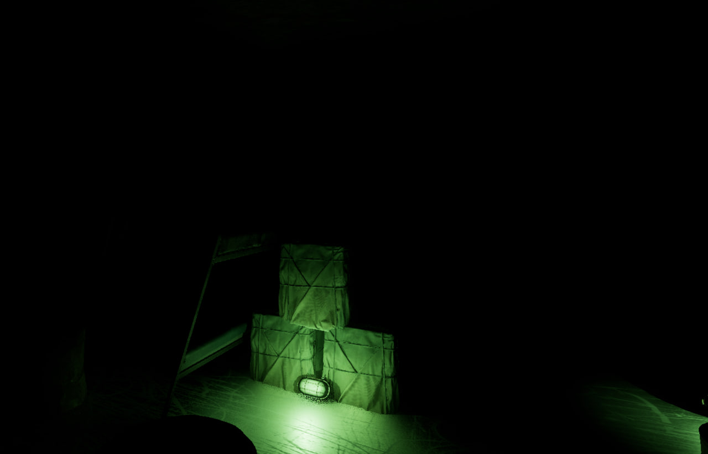

The Curse of the Dead
Психологический хоррор от первого лица на заброшенном корабле. Исследуйте, выживайте и примите решение, которое определит вашу судьбу.
Наша концепция
The Curse of the Dead — это психологический хоррор, где страх рождается не от внезапных испугов, а от атмосферы изоляции, паранойи и давления неизвестного прошлого. Игрок просыпается на заброшенной барже посреди моря и должен исследовать судно, избегая сверхъестественных угроз, и сделать выбор: кем именно он будет на этом судне.
Жанр
Психологический хоррор / Приключение / Головоломка
Платформы
ПК (Steam)
Целевая аудитория
Подростки и взрослые, любящие атмосферные хорроры
Сеттинг
Заброшенная грузовая баржа в туманах океана
Основные механики
- Исследование с счетчиком Гейгера
- Использование противогаза как фильтра восприятия
- Финальный нарративный выбор
Уникальные особенности
- Атмосфера безысходности и изоляции
- Психологический ужас вместо скримеров
- Моральный выбор, определяющий судьбу
- Эпистемические предметы для повествования
Скриншоты

Особенности игры
Психологический ужас
Атмосфера безысходности и изоляции создается через исследование заброшенного корабля, где страх рождается из паранойи и светового дизайна, а не из кровавых скримеров.
Моральный выбор
На мостике вы решаете: послать SOS или узнать свою геолокацию, подправив курс корабля. Ваш выбор определит не только исход игры, но и вашу вечную судьбу.
Эпистемические предметы
Повествование осуществляется через аудиодневники экипажа и записки, раскрывающие предысторию. Прямых кат-сцен нет, чтобы не вырывать игрока из погружения.
Трейлер
Наша команда
Джалилов Адель
Создал 3D-модель корабля и наполнил его деталями. Отвечает за визуальное наполнение мира игры, делая его реалистичным и пугающим.
Аксельевич Илья
Разработал логику игры: поведение врагов, механики дверей и замков. Также участвовал в создании основных игровых сцен и уровня.
Пономарев Антон
Придумал ключевые механики игры и логично вписал их в жанр психологического хоррора. Участвовал в разработке игрового меню и сюжета.
Пономарев Максим
Создал систему меню, сохранения и локализации. Реализовал взаимодействие игрока с окружением на корабле, обеспечивая плавность геймплея.